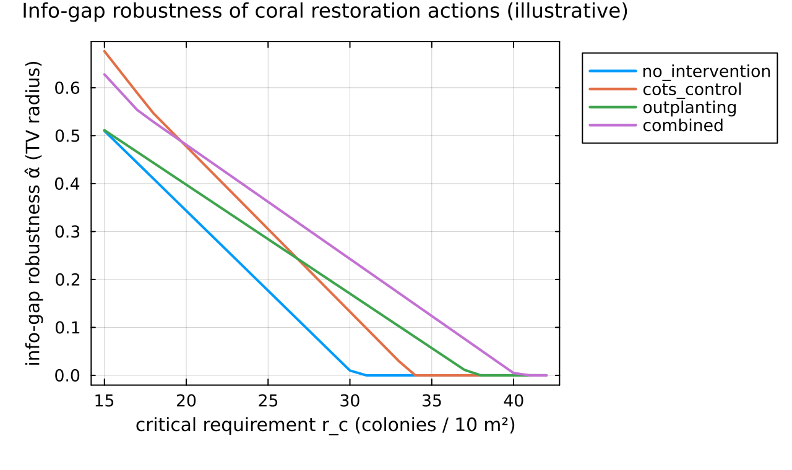

Coral reef restoration under warming bleaching schedules and deep uncertainty
Simon Frost
- Motivation
- 1. Non-stationary adaptive management under a warming schedule
- 2. Act now, or delay outplanting to run a transect count survey?
- 3. Risk aversion and certainty-equivalent VOI
- 4. Deep uncertainty (info-gap), decision curves, and implementation gaps
Motivation
Fore-reef coral assemblages (such as the Mo’orea reefs studied by Kayal et al. 2018, Ecology Letters 21:1790–1799) face recurring disturbances from crown-of-thorns starfish (Acanthaster spp., COTS) outbreaks and thermal bleaching events whose frequency is rising under ocean warming. Managers must decide each season whether to leave a reef unmanaged (:no_intervention, the baseline), remove starfish (:cots_control), outplant nursery-grown Acropora colonies (:outplanting), or mount both (:combined).
All parameters, transition matrices and payoffs in this vignette are illustrative, expressed in living coral colonies per 10 m² (with no invented monetary prices). The example showcases non-stationary adaptive_management, sample-based value_of_waiting with CountStudy, certainty-equivalent VOI (ce_evpi, ce_evsi), info-gap robustness and opportuneness, decision_curve, and implementation / model-improvement VOI (evim, evmi).
1. Non-stationary adaptive management under a warming schedule
Reef condition moves among three discrete states: :recovery (healthy recruitment), :cots_outbreak (active starfish predation), and :bleaching (acute thermal stress). An annual diver transect (obs_monitor) reveals the reef state with imperfect accuracy, whereas :no_intervention relies on a coarser remote-sensing signal (obs_remote). Under a warming schedule, the probability of transitioning into :bleaching rises steadily across a 6-year horizon.
using DecisionAnalysis
using Random: Xoshiro
include(joinpath("..", "_common.jl"))
states = [:recovery, :cots_outbreak, :bleaching]
actions = [:no_intervention, :cots_control, :outplanting, :combined]
# Per-year net living coral colonies per 10 m² (illustrative).
Q_base = PayoffTable(actions, states,
[42.0 18.0 12.0; # no_intervention (baseline)
40.0 34.0 11.0; # cots_control
54.0 21.0 10.0; # outplanting (vulnerable during bleaching)
51.0 36.0 9.0]) # combined
prior = FiniteBelief(states, [0.55, 0.30, 0.15])
prob = DecisionProblem(Q_base, prior; baseline=:no_intervention)
obs_remote = Experiment([0.65 0.25 0.20;
0.20 0.55 0.25;
0.15 0.20 0.55];
signals=[:low_alert, :cots_alert, :heat_alert], states)
obs_diver = Experiment([0.88 0.08 0.06;
0.07 0.84 0.09;
0.05 0.08 0.85];
signals=[:low_alert, :cots_alert, :heat_alert], states)
exps = (; no_intervention=obs_remote, cots_control=obs_diver,
outplanting=obs_diver, combined=obs_diver)
# Column-stochastic transition matrices T[next, present] parameterised by bleaching risk b.
function reef_transitions(b::Real)
T_none = [0.75 - b 0.20 0.35 - 0.5b;
0.20 0.70 - b 0.20;
0.05 + b 0.10 + b 0.45 + 0.5b]
T_cots = [0.80 - b 0.55 0.35 - 0.5b;
0.15 0.35 - b 0.15;
0.05 + b 0.10 + b 0.50 + 0.5b]
T_outp = [0.82 - b 0.22 0.38 - 0.5b;
0.13 0.68 - b 0.17;
0.05 + b 0.10 + b 0.45 + 0.5b]
T_comb = [0.86 - b 0.58 0.38 - 0.5b;
0.09 0.32 - b 0.12;
0.05 + b 0.10 + b 0.50 + 0.5b]
return (; no_intervention=T_none, cots_control=T_cots,
outplanting=T_outp, combined=T_comb)
end
H = 6
stationary_T = reef_transitions(0.05)
warming_T = [reef_transitions(0.05 + 0.04 * (t - 1)) for t in 1:H]
am_stat = adaptive_management(prob, exps; transitions=stationary_T, horizon=H,
discount=0.95, method=:points, grid=6)
am_warm = adaptive_management(prob, exps; transitions=warming_T, horizon=H,
discount=0.95, method=:points, grid=6)
md_table(["climate regime (6-year horizon, grid=6)", "active lower bound",
"active upper bound", "perfect information", "baseline"],
[["Stationary bleaching risk (b = 0.05)", am_stat.active, am_stat.active_upper,
am_stat.perfect, am_stat.baseline],
["Warming schedule (b: 0.05 -> 0.25)", am_warm.active, am_warm.active_upper,
am_warm.perfect, am_warm.baseline]]; digits=2)| climate regime (6-year horizon, grid=6) | active lower bound | active upper bound | perfect information | baseline |
|---|---|---|---|---|
| Stationary bleaching risk (b = 0.05) | 218.92 | 221.36 | 230.07 | 150.94 |
| Warming schedule (b: 0.05 -\> 0.25) | 203.85 | 206.59 | 215.68 | 143.67 |
Under rising bleaching frequency, expected cumulative colonies drop across all policies, and the adaptive policy shifts away from vulnerable outplanting toward COTS control as bleaching becomes more probable late in the horizon.
2. Act now, or delay outplanting to run a transect count survey?
Before launching a seasonal outplanting campaign, managers can count crown-of-thorns starfish along $n$ reef transects (CountStudy(:cots_rate; n)). Waiting one month to complete the survey forfeits part of the favourable seasonal window (illustrative delay losses of 1.5 colonies per 10 m² on :cots_control and 2.5 colonies per 10 m² on :outplanting). Sample-based value_of_waiting weighs the delayed EVSI directly against that delay cost.
rng = Xoshiro(202638)
n_draws = 1500
# Illustrative prior over COTS density (starfish per transect): Gamma-like positive draws.
cots_rate = 0.2 .+ 4.8 .* rand(rng, n_draws) .^ 2
# Outplanting succeeds when COTS density is low (< 1.5), loses colonies when high.
Q_now_mat = vcat(
fill(30.0, 1, n_draws), # no_intervention
permutedims(28.0 .+ 3.0 .* min.(cots_rate, 3.0)), # cots_control
permutedims(46.0 .- 12.0 .* cots_rate), # outplanting
)
Q_late_mat = copy(Q_now_mat)
Q_late_mat[2, :] .-= 1.5 # late COTS removal allows extra grazing
Q_late_mat[3, :] .-= 2.5 # lost early-season settlement from waiting
sb_cots = SampleBelief((; cots_rate))
p_now = DecisionProblem(PayoffTable(Q_now_mat; actions=[:no_intervention, :cots_control,
:outplanting]),
sb_cots; baseline=:no_intervention)
p_late = PayoffTable(Q_late_mat; actions=[:no_intervention, :cots_control, :outplanting])
wait_rows = map([2, 5, 10, 20]) do n_transects
design = CountStudy(:cots_rate; n=n_transects)
study = SummaryStatistics(p_now, design; seed=7)
vw = value_of_waiting(p_now, p_late, study; seed=7)
return ["$(n_transects) transects", vw.evsi_delayed.value, vw.delay_cost,
vw.value, vw.standard_error]
end
md_table(["COTS transect survey", "EVSI (delayed)", "delay cost",
"value of waiting (colonies)", "SE"], wait_rows; digits=2)| COTS transect survey | EVSI (delayed) | delay cost | value of waiting (colonies) | SE |
|---|---|---|---|---|
| 2 transects | 3.41 | 1.5 | 1.91 | 0.18 |
| 5 transects | 3.98 | 1.5 | 2.48 | 0.15 |
| 10 transects | 4.17 | 1.5 | 2.67 | 0.15 |
| 20 transects | 4.28 | 1.5 | 2.78 | 0.14 |
3. Risk aversion and certainty-equivalent VOI
A risk-averse reef manager values avoiding catastrophic low-colony outcomes more than symmetric gains. ce_evpi and ce_evsi compute willingness to trade for perfect or diver-survey information in colonies per 10 m² under ExponentialUtility and PowerUtility.
u_lin = LinearUtility(:colonies)
u_cara = ExponentialUtility(:colonies; risk_aversion=0.04)
u_crra = PowerUtility(:colonies; risk_aversion=0.5)
md_table(["utility", "act-now CE", "CE-EVPI (colonies)", "CE-EVSI diver (colonies)"],
[["Linear (risk neutral)", ce_evpi(prob, u_lin).act_now_ce,
ce_evpi(prob, u_lin).value, ce_evsi(prob, u_lin, obs_diver).value],
["ExponentialUtility (r = 0.04)", ce_evpi(prob, u_cara).act_now_ce,
ce_evpi(prob, u_cara).value, ce_evsi(prob, u_cara, obs_diver).value],
["PowerUtility (ρ = 0.5)", ce_evpi(prob, u_crra).act_now_ce,
ce_evpi(prob, u_crra).value, ce_evsi(prob, u_crra, obs_diver).value]];
digits=2)| utility | act-now CE | CE-EVPI (colonies) | CE-EVSI diver (colonies) |
|---|---|---|---|
| Linear (risk neutral) | 40.2 | 2.1 | 1.1 |
| ExponentialUtility (r = 0.04) | 34.93 | 2.1 | 0.73 |
| PowerUtility (ρ = 0.5) | 38.17 | 2.14 | 0.93 |
4. Deep uncertainty (info-gap), decision curves, and implementation gaps
When even the nominal reef-regime probabilities [0.55, 0.30, 0.15] are uncertain, info_gap_robustness asks how large a total-variation perturbation $\alpha$ each action can tolerate while still guaranteeing a critical colony threshold $r_c$ (say 30 colonies per 10 m²), while info_gap_opportuneness asks how small a perturbation suffices to achieve an ambitious windfall $r_w$ (45 colonies per 10 m²).
rob = info_gap_robustness(prob, 30.0)
opp = info_gap_opportuneness(prob, 45.0)
md_table(["action", "nominal EU", "robustness α̂ (≥ 30 colonies)",
"opportuneness β̂ (≥ 45 colonies)"],
[[a, aggregate(Expectation(), prob)[i], rob.robustness[i], opp.opportuneness[i]]
for (i, a) in enumerate(actions)]; digits=3)| action | nominal EU | robustness α̂ (≥ 30 colonies) | opportuneness β̂ (≥ 45 colonies) |
|---|---|---|---|
no_intervention | 30.3 | 0.01 | none |
cots_control | 33.85 | 0.133 | none |
outplanting | 37.5 | 0.17 | 0.177 |
combined | 40.2 | 0.243 | 0.114 |
# Sweep critical colony requirement r_c to show the classic info-gap trade-off curves.
reqs = collect(15.0:1.0:42.0)
plt_ig = Plots.plot(; xlabel="critical requirement r_c (colonies / 10 m²)",
ylabel="info-gap robustness α̂ (TV radius)",
title="Info-gap robustness of coral restoration actions (illustrative)")
for (i, a) in enumerate(actions)
alphas = [info_gap_robustness(prob, r).robustness[i] for r in reqs]
Plots.plot!(plt_ig, reqs, alphas; label=String(a))
end
png_figure(plt_ig)
Finally, managers face two operational frictions beyond ecological uncertainty: imperfect implementation (evim, when field crews only reach partial compliance with the recommended action) and model discrepancy (evmi, when a simplified recruitment model disagrees with an alternative density-dependent model).
# Suppose current practice splits effort 50% no_intervention, 25% cots_control,
# 15% outplanting, 10% combined (illustrative).
im_perf = evim(prob; implementation=(; no_intervention=0.50, cots_control=0.25,
outplanting=0.15, combined=0.10))
im_with_diver = evim(prob, obs_diver;
implementation=(; no_intervention=0.50, cots_control=0.25,
outplanting=0.15, combined=0.10))
# Alternative recruitment model where outplanting suffers heavy post-outplant mortality,
# making :cots_control optimal instead of :combined.
Q_alt = PayoffTable(actions, states,
[42.0 18.0 12.0;
40.0 34.0 11.0;
36.0 12.0 5.0;
35.0 26.0 4.0])
prob_alt = DecisionProblem(Q_alt, prior; baseline=:no_intervention)
mi_ens = evmi([prob, prob_alt], [0.5, 0.5])
# Decision curve (Vickers & Elkin 2006) for triggering COTS control from an outbreak
# risk score across the 1,500 simulated reefs (illustrative threshold sweep).
outbreak_y = Int.(cots_rate .>= 1.5)
risk_score = clamp.(1 ./ (1 .+ exp.(-(cots_rate .- 1.5))), 0.01, 0.99)
dc = decision_curve(outbreak_y, risk_score; thresholds=[0.1, 0.25, 0.4, 0.6])
md_table(["value decomposition", "colonies / 10 m²"],
[["EVPIM (perfect implementation)", im_perf.value],
["EVSI of diver transect alone", evsi(prob, obs_diver)],
["Joint value of diver survey + perfect implementation", im_with_diver.value],
["EVMI across two coral recruitment models", mi_ens.value]]; digits=3)| value decomposition | colonies / 10 m² |
|---|---|
| EVPIM (perfect implementation) | 6.943 |
| EVSI of diver transect alone | 1.101 |
| Joint value of diver survey + perfect implementation | 8.044 |
| EVMI across two coral recruitment models | 3.1 |
md_table(["threshold p_t", "net benefit (risk score)", "treat all",
"interventions avoided"],
[[r.threshold, r.net_benefit, r.treat_all, r.interventions_avoided]
for r in dc]; digits=3)| threshold p_t | net benefit (risk score) | treat all | interventions avoided |
|---|---|---|---|
| 0.1 | 0.396 | 0.396 | 0 |
| 0.25 | 0.35 | 0.275 | 0.225 |
| 0.4 | 0.396 | 0.093 | 0.453 |
| 0.6 | 0.381 | -0.36 | 0.494 |
Closing the implementation gap (evim) can be worth more than collecting new survey data alone, and combining both (evim(prob, obs_diver; ...)) equals the sum of perfect implementation plus the diver survey’s EVSI.